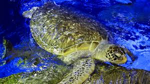
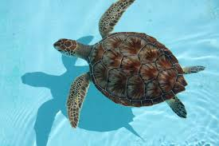
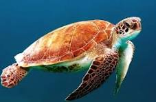

1. Introduction
The sea turtle is a marine reptile that belongs to the order Testudines. There are seven species, including the green sea turtle, loggerhead, and hawksbill. Sea turtles are ancient animals that have survived for more than 100 million years.


2. Habitat / Environment
Sea turtles live in warm and temperate ocean waters around the world. They spend most of their lives at sea and return to sandy beaches to lay eggs. Coastal waters, coral reefs, seagrass beds, and open ocean habitats all support different sea turtle species.
Typical habitat features:
- Warm ocean currents
- Shallow reefs and seagrass meadows
- Sandy beaches for nesting
3. Key Adaptations
-
Flippers for swimming: Sea turtles have long, strong front flippers and rear flippers that act like paddles.
This adaptation helps them swim efficiently across long migrations and escape predators in the water.
-
Hard shell and scutes: Their shell provides protection from predators and rough ocean conditions.
The shell helps turtles survive attacks and reduces injury while moving through coral, rocks, or debris.
-
Salt glands: Sea turtles can drink seawater and remove excess salt using specialized glands near their eyes.
This allows them to survive in ocean environments without needing fresh water.
-
Temperature-dependent sex determination: The temperature of nesting beaches determines whether eggs become male or female.
This adaptation can help balance population numbers in stable environments.
4. How Adaptations Help Survival
Sea turtle adaptations support survival in multiple ways:
- Streamlined flippers improve swimming speed and energy efficiency, making long migrations possible.
- The protective shell reduces mortality from predators like sharks and large fish.
- Salt glands let turtles remain in the ocean for their entire lives, so they are not limited by freshwater sources.
- Camouflage coloring helps hatchlings hide from shore predators while moving toward the sea.
5. Environmental Pressures & Predators
Sea turtles face many pressures that shape their survival:
- Natural predators: sharks, large fish, crocodiles, and birds.
- Human threats: fisheries, plastic pollution, boat strikes, and habitat loss.
- Climate pressure: rising temperatures affect nesting beaches and sex ratios.
Predator pressure selects for sea turtles with faster swimming speed, better camouflage, and stronger shells.
6. Connection to Natural Selection
Natural selection explains why successful adaptations become more common over generations. Sea turtles with traits that improve survival and reproduction are more likely to pass those traits to offspring.
Examples of natural selection in sea turtles:
- Turtles with better swimming ability survive long migrations and return to nest successfully.
- Hatchlings with coloring that blends into the sand are less likely to be eaten before reaching the ocean.
- Turtles that tolerate warmer water or polluted habitats may reproduce more often in changing marine environments.
7. Adaptation That Could Become Harmful
Temperature-dependent sex determination is an adaptation that can become harmful if the environment changes.
Because sea turtle eggs develop into males or females based on nest temperature, increasing beach temperatures can create unbalanced sex ratios. This can reduce future reproduction and threaten population stability if too many females are born and too few males survive.

8. Sources
- National Oceanic and Atmospheric Administration (NOAA). "Sea Turtles." noaa.gov/education/resource-collections/marine-life/sea-turtles.
- World Wildlife Fund. "Sea Turtles." worldwildlife.org/species/sea-turtle.
- Sea Turtle Conservancy. "Sea Turtle Facts." conserveturtles.org/seaturtle-facts.